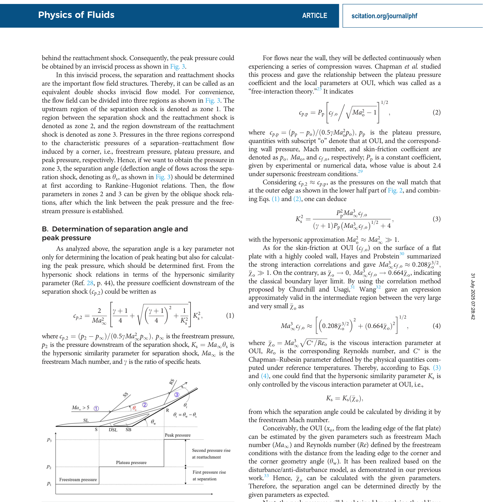
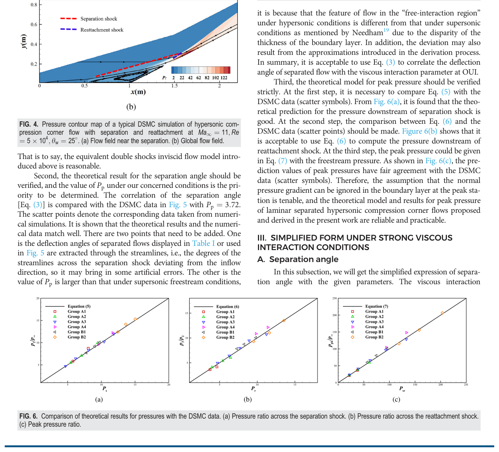
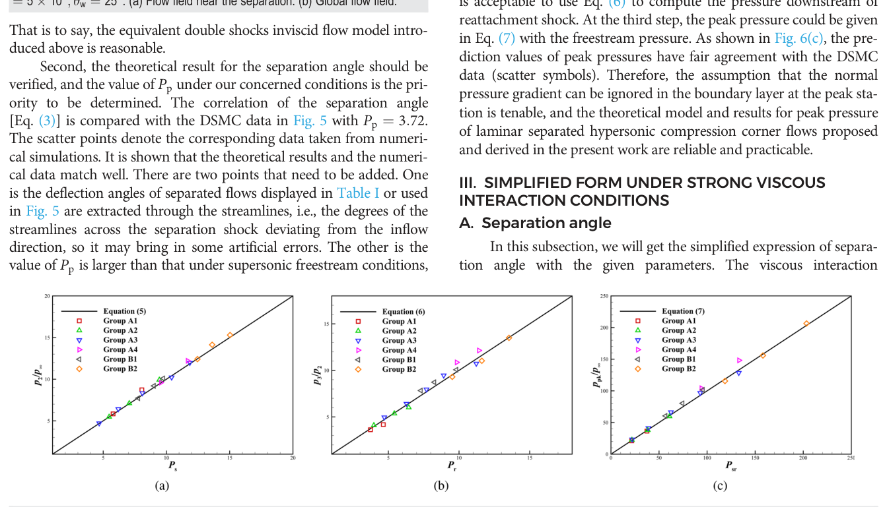
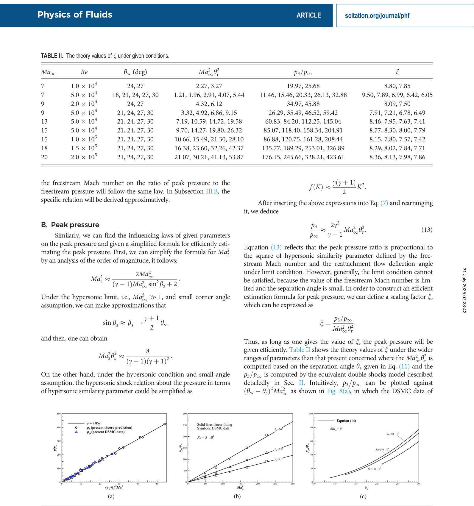

01中文摘要
激波与边界层干扰在高超声速分离-再附流动中造成局部高压和严重加热。本文采用理论建模研究低至中等雷诺数下高超声速压缩拐角分离流动的分离角和峰值压力。根据壁面压力分布和流场结构特征，作者提出峰值压力的等效双激波无粘流动模型，并结合自由干扰理论，推导分离角和峰值压力随来流马赫数、雷诺数和拐角角变化的公式。直接模拟 Monte Carlo 数据验证了公式的合理性。研究揭示分离角几乎与来流马赫数无关，强粘性干扰下峰值压力与来流压力之比近似正比于马赫数平方，并可推广到空心圆柱-裙等轴对称流动。
原始摘要（英文/原文）
Interactions between shock waves and the boundary layer will cause high pressure loads and severe heating locally on the material surface in hypersonic separation–reattachment flows. In this paper, theoretical modeling is employed to study the separation angle and peak pressure of hypersonic compression corner flows with separated regions at low-to-medium Reynolds number. According to the characteristics of wall pressure distribution and flow field structures, an equivalent double shocks inviscid flow model for peak pressure is introduced. Based on this model, combining the “free-interaction theory,” formulas for the separation angle and peak pressure with freestream parameters (Mach number and Reynolds number) and the geometry corner angle are derived, and the reasonability and effectiveness are also shown by the numerical data provided by the direct simulation Monte Carlo method. It is revealed that the separation angle is almost independent of the freestream Mach number, and the ratio of peak pressure to freestream pressure is approximately proportional to the square of the freestream Mach number under strong viscous interaction conditions. Moreover, it is indicated that present theoretical results can be extended to axisymmetric flows through the discussion of hypersonic separated flows generated by a hollow cylinder-flare geometry.
02阅读说明
类型：理论建模 + DSMC 数值验证的期刊论文（Physics of Fluids 33, 086106, 2021，13页）；材料范围：bundle 含第1–13页全文与11幅抓图（图1–11）；图表可读性：正文与图注完整，双栏提取导致式(1)–(20)符号错位，已用PDF第4、5、7、8、12页核对关键公式；信息完整度：表I–IV工况、DSMC设置、推导链、验证与讨论齐全。 文章类型：期刊
03一句话核心与三句话摘要
提出等效双激波+自由干扰理论模型，给出层流高超声速压缩角分离角与峰值压力的显式预测式并用DSMC验证。
- 高超声速压缩角分离流的峰值压力与分离角缺乏由来流参数直接计算的显式理论式，自由干扰理论本身不能预测峰值压力（p.1–3）。 原文明确
- 把峰值压力分解为分离激波与再附激波两次斜激波压缩，结合自由干扰理论得到分离角θs与峰值压力比ppk/p∞的显式式，并用Ma∞=7–15、Re=10^4–10^5的DSMC数据验证（p.3–9）。 AI概括
- 分离角几乎与Ma∞无关而主要随θw与Re变化，峰值压力比近似正比于Ma∞²(θw−θs)²；模型可推广到轴对称空心圆柱-裙，但Re<10^4稀薄流下失效（p.6–11）。 AI概括
04核心内容清单
| 要点 | 类型 | 重要性 | 原文依据 | 属性 |
|---|---|---|---|---|
| 提出等效双激波无粘模型，把峰值压力视为再附激波后、边界层外缘的压力。 | 理论模型 | A | p.3–4、Fig.3 | 原文明确 |
| 结合自由干扰理论导出Ks²–Pp关系式(3)，取Pp=3.72与DSMC分离角吻合。 | 推导/验证 | A | 式(3)、Fig.5，p.4–6 | 原文明确 |
| 给出分离角显式式(11)：θs∝θw^{3/8}Ma∞^{-1/16}Re^{-3/32}，Ma∞=10时化为式(12)。 | 显式公式 | A | 式(11)–(12)，p.7 | 原文明确 |
| 分离角随拐角θw增大、随Ma∞与Re减小；高Ma∞下几乎与Ma∞无关。 | 参数规律 | A | Fig.7b，p.7 | 原文明确 |
| 峰值压力比近似为7.85(θw−θs)²Ma∞²，即正比于Ma∞²与再附偏转角平方。 | 显式公式 | A | 式(14)、Fig.8，p.8–9 | 原文明确 |
| ppk/p∞随Ma∞、Re、θw单调增大；Re增大时分离区压升减弱但再附压升增强。 | 参数规律 | A | Fig.8b–c，p.9 | 原文明确 |
| 推广到空心圆柱-裙：θs式(15)系数c=0.659，峰压式(16)系数ξ=4.57，二者均低于二维。 | 轴对称推广 | B | 式(15)–(16)、Fig.10、Table III，p.9–10 | 原文明确 |
| 弱粘性干扰下（Re>10^5）峰压模型仍可用，与Roghelia实验误差<5%。 | 实验校验 | B | Table IV，p.10–11 | 原文明确 |
| 峰值热流与峰值压力呈幂律qpk/qref=0.16(ppk/pref)^{1.0}，与Hung–Barnett的0.13/1.13接近。 | 工程关联 | B | 式(17)、Fig.11，p.10–11 | 原文明确 |
| Re<10^4稀薄条件下再附压缩波无法汇聚成激波，双激波模型失效。 | 适用边界 | C | p.11 | 原文明确 |
| 整条预测链可由Ma∞、Re、θw直接给出θs和ppk/p∞，构成工程快速估计方法。 | 工程价值 | B | 式(11)–(14)，p.7–9 | AI概括 |
05引言：研究问题与领域缺口
高超声速飞行器控制面、进气道、体襟翼等部位的压缩角会产生激波/边界层干扰，分离与再附带来局部高压和严酷气动加热；工程上常把峰值热流写成峰值压力的幂函数，但峰值压力本身与流场结构密切相关，二者关系并不清楚（p.1）。已有压缩角研究虽多，但分离角的显式公式与影响规律很少；Kumar与Stollery仅把分离流线与分离点粘性干扰参数关联，最小粘性耗散/最小熵产方法或自由干扰+激波关系可求激波角，但在粘性干扰不可忽略时仍缺乏显式表达（p.2）。压力预测方面，自由干扰理论不能给出峰值压力，半经验式适用条件有限，最近的最小粘性耗散模型为隐式且忽略Reynolds数（p.2–3）。本文目标是针对低至中等Reynolds数（10^4–10^5）、层流、无真实气体/非定常效应的分离压缩角，建立峰值压力与分离角的理论模型，给出显式公式，用DSMC验证，并推广到轴对称空心圆柱-裙流动（p.3）。
06流动条件与几何构型
| 项目 | 数值/描述 | 依据 | 备注 |
|---|---|---|---|
| DSMC 总体范围（表I） | Ma∞=7–15；Re=1.0×10^4–1.0×10^5；θw=21°–30°；T∞=60 K；Tw=300 K；平板前缘到拐角长度1 m；二维尖前缘；无反应空气（79% N2/21% O2） | p.5 | |
| DSMC A1-1（表I） | Ma∞=7；Re=1.0e+04；θw=25°；x_o=0.510 m；θs=12.40°；ppk/p∞=21.14 | 表I，p.4 | |
| DSMC A1-2（表I） | Ma∞=9；Re=1.0e+04；θw=25°；x_o=0.635 m；θs=12.13°；ppk/p∞=36.39 | 表I，p.4 | |
| DSMC A2-1（表I） | Ma∞=7；Re=2.0e+04；θw=25°；x_o=0.335 m；θs=11.90°；ppk/p∞=22.46 | 表I，p.4 | |
| DSMC A2-2（表I） | Ma∞=9；Re=2.0e+04；θw=25°；x_o=0.510 m；θs=11.10°；ppk/p∞=38.08 | 表I，p.4 | |
| DSMC A2-3（表I） | Ma∞=11；Re=2.0e+04；θw=25°；x_o=0.650 m；θs=10.98°；ppk/p∞=59.68 | 表I，p.4 | |
| DSMC A3-1（表I） | Ma∞=7；Re=5.0e+04；θw=25°；x_o=0.260 m；θs=10.56°；ppk/p∞=23.36 | 表I，p.4 | |
| DSMC A3-2（表I） | Ma∞=9；Re=5.0e+04；θw=25°；x_o=0.335 m；θs=10.13°；ppk/p∞=41.19 | 表I，p.4 | |
| DSMC A3-3（表I） | Ma∞=11；Re=5.0e+04；θw=25°；x_o=0.425 m；θs=9.95°；ppk/p∞=66.29 | 表I，p.4 | |
| DSMC A3-4（表I） | Ma∞=13；Re=5.0e+04；θw=25°；x_o=0.480 m；θs=9.87°；ppk/p∞=96.74 | 表I，p.4 | |
| DSMC A3-5（表I） | Ma∞=15；Re=5.0e+04；θw=25°；x_o=0.575 m；θs=9.46°；ppk/p∞=128.49 | 表I，p.4 | |
| DSMC A4-1（表I） | Ma∞=13；Re=1.0e+05；θw=25°；x_o=0.325 m；θs=9.36°；ppk/p∞=104.14 | 表I，p.4 | |
| DSMC A4-2（表I） | Ma∞=15；Re=1.0e+05；θw=25°；x_o=0.375 m；θs=9.17°；ppk/p∞=148.19 | 表I，p.4 | |
| DSMC B1-1（表I） | Ma∞=11；Re=5.0e+04；θw=21°；x_o=0.630 m；θs=9.09°；ppk/p∞=44.61 | 表I，p.4 | |
| DSMC B1-2（表I） | Ma∞=11；Re=5.0e+04；θw=24°；x_o=0.470 m；θs=9.73°；ppk/p∞=60.46 | 表I，p.4 | |
| DSMC B1-3（表I） | Ma∞=11；Re=5.0e+04；θw=27°；x_o=0.350 m；θs=10.37°；ppk/p∞=80.30 | 表I，p.4 | |
| DSMC B1-4（表I） | Ma∞=11；Re=5.0e+04；θw=30°；x_o=0.265 m；θs=10.81°；ppk/p∞=101.63 | 表I，p.4 | |
| DSMC B2-1（表I） | Ma∞=15；Re=5.0e+04；θw=21°；x_o=0.840 m；θs=7.20°；ppk/p∞=92.07 | 表I，p.4 | |
| DSMC B2-2（表I） | Ma∞=15；Re=5.0e+04；θw=24°；x_o=0.620 m；θs=8.06°；ppk/p∞=115.55 | 表I，p.4 | |
| DSMC B2-3（表I） | Ma∞=15；Re=5.0e+04；θw=27°；x_o=0.460 m；θs=9.02°；ppk/p∞=155.89 | 表I，p.4 | |
| DSMC B2-4（表I） | Ma∞=15；Re=5.0e+04；θw=30°；x_o=0.325 m；θs=10.27°；ppk/p∞=206.46 | 表I，p.4 | |
| 空心圆柱-裙几何 | 圆柱段直径d=0.065 m；圆柱段长度l=0.1017 m；零攻角；冷壁；仅计算外部流动 | p.9、Fig.9 | |
| 空心圆柱-裙 A-1（表III） | Ma∞=7；Re=2.0e+04；T∞=60 K；Tw/T0=0.463；θw=27°；θs=10.10°；ppk/p∞=24.73 | 表III，p.9 | |
| 空心圆柱-裙 B-1（表III） | Ma∞=7；Re=5.0e+04；T∞=60 K；Tw/T0=0.291；θw=21°；θs=7.54°；ppk/p∞=14.51 | 表III，p.9 | |
| 空心圆柱-裙 B-2（表III） | Ma∞=7；Re=5.0e+04；T∞=60 K；Tw/T0=0.291；θw=24°；θs=8.52°；ppk/p∞=19.82 | 表III，p.9 | |
| 空心圆柱-裙 B-3（表III） | Ma∞=7；Re=5.0e+04；T∞=60 K；Tw/T0=0.291；θw=27°；θs=9.57°；ppk/p∞=26.66 | 表III，p.9 | |
| 空心圆柱-裙 C-1（表III） | Ma∞=9；Re=3.0e+04；T∞=60 K；Tw/T0=0.463；θw=27°；θs=9.39°；ppk/p∞=46.94 | 表III，p.9 | |
| 空心圆柱-裙 D-1（表III） | Ma∞=9；Re=5.0e+04；T∞=60 K；Tw/T0=0.291；θw=24°；θs=8.17°；ppk/p∞=35.43 | 表III，p.9 | |
| 空心圆柱-裙 D-2（表III） | Ma∞=9；Re=5.0e+04；T∞=60 K；Tw/T0=0.291；θw=27°；θs=9.19°；ppk/p∞=49.11 | 表III，p.9 | |
| 空心圆柱-裙 E-1（表III） | Ma∞=11；Re=5.0e+04；T∞=60 K；Tw/T0=0.198；θw=27°；θs=8.99°；ppk/p∞=82.33 | 表III，p.9 | |
| 空心圆柱-裙 F-1（表III） | Ma∞=13；Re=5.0e+04；T∞=60 K；Tw/T0=0.463；θw=27°；θs=8.85°；ppk/p∞=119.35 | 表III，p.9 | |
| 空心圆柱-裙 G-1（表III） | Ma∞=15；Re=5.0e+04；T∞=60 K；Tw/T0=0.291；θw=27°；θs=8.70°；ppk/p∞=161.81 | 表III，p.9 | |
| 弱粘性干扰对比（表IV，Roghelia等[45]） | Ma∞=7.7；Re=4.2×10^5；θw=20°；θs=5°；实验ppk,e/p1=17.19；理论p3/p1=16.85 | 表IV，p.11 | |
| 弱粘性干扰对比（表IV，Roghelia等[45]） | Ma∞=7.7；Re=4.2×10^5；θw=25°；θs=5°；实验ppk,e/p1=27.15；理论p3/p1=26.09 | 表IV，p.11 |
07核心现象与关键参数
| 参数 | 定义 | 数值 | 关系/说明 | 依据 |
|---|---|---|---|---|
| Ks | 分离激波的高超声速相似参数，Ks=Ma∞θs | 由式(3)/(10)确定 | 强干扰下仅由OUI粘性干扰参数ζo控制 | p.4、p.7 |
| cp,2 | 分离激波后压力系数，(p2−p∞)/(0.5γMa∞²p∞) | 按式(1)计算 | 随Ks增大 | 式(1)，p.4 |
| cp,p | 平台压力系数，(pp−po)/(0.5γMa_o²p_o) | 按式(2)计算 | cp,p=Pp[cf,o/√(Ma_o²−1)]^{1/2} | 式(2)，p.4 |
| Pp | 自由干扰理论的经验常数 | 本文高超声速条件取3.72；超音速来流下约2.4 | 用于式(2)、(3)、(8)、(10) | p.4、p.6 |
| ζo | OUI处粘性干扰参数，ζo=Ma∞³√C/√Re_o | 由OUI位置x_o与来流条件计算 | 强干扰ζo≫1 | 式(4)下方，p.4 |
| η | 式(10)的系数，η=0.456Pp/[(γ+1)β^{3/8}] | 0.571（二维，由DSMC数据确定） | Ks²≈η(ζKw²)^{3/8} | p.7、Fig.7a |
| β | OUI位置简化式(9)中的常数 | 1.77 | x_o/l≈βMa∞/(θw²Re^{1/2})（式(9)符号受排版限制，完整形式无法确认） | p.7 |
| ξ | 峰值压力缩放因子，ξ=(p3/p∞)/(Ma∞²θr²) | 7.85（二维）；4.57（空心圆柱-裙） | ppk/p∞≈ξ(θw−θs)²Ma∞² | p.8–10、Table II |
| c | 轴对称分离角公式(15)的系数 | 0.659（d=0.065 m、l=0.1017 m） | θs≈cθw^{3/8}/(Ma∞^{1/16}Re^{3/32}) | p.10 |
| a, b | 峰值热流-峰值压力幂律的系数与指数 | a=0.16，b=1.0（本文DSMC拟合）；Hung–Barnett：a=0.13，b=1.13 | qpk/qref=a(ppk/pref)^b | p.11、Fig.11 |
| θs | 分离角（分离激波处流线偏转角） | DSMC工况约7.20°–12.40° | 随θw增大、随Ma∞与Re减小 | Table I，p.4；Fig.7 |
| ppk/p∞ | 峰值压力与来流静压之比 | DSMC工况约14.51–206.46 | 随Ma∞、Re、θw单调增大 | Table I、Table III |
| Ma∞²θr² | 再附流动的高超声速相似参数平方，θr=θw−θs | Table II给出2.27–53.87 | p3/p∞与ξ的乘积关系 | Table II，p.8 |
| 误差水平 | 简化式相对DSMC/实验的偏差 | 峰压估计多数<10%；弱干扰实验峰压<5% | 用于评价模型有效性 | p.9、p.11 |
08方法与数据
理论部分：根据壁面压力分布与流场结构，把分离-再附流简化为“等效双激波无粘模型”——区1为分离激波上游、区2为两激波之间、区3为再附激波后；假设平台压力等于分离激波后压力、峰值压力等于再附激波后压力，且峰值站边界层法向压力梯度可忽略（p.3–4）。分离角由高超声速斜激波关系与Chapman自由干扰理论联立求得：自由干扰理论把平台压力系数与OUI（上游干扰起点）处摩阻关联，OUI处摩阻用Hayes–Probstein强/弱干扰渐近经Churchill–Usagi桥接，因此Ks=Ma∞θs仅由OUI粘性干扰参数ζo控制；OUI位置由作者前作的扰动/抗扰动模型给出（p.4）。强粘性干扰下进一步作渐近简化，得到θs与ppk/p∞的显式幂律（p.7–8）。数值验证：二维/轴对称DSMC程序DS2V 4.5（Bird），变径硬球分子模型、Larsen–Borgnakke平动-转动能量交换、完全漫反射壁面、转动适应系数1、无反应空气（79% N2/21% O2）；网格自适应，时间步为局部平均碰撞时间的1/3，每个碰撞网格分子数>8，碰撞对分离尺度小于平均自由程（p.5）。工况覆盖Ma∞=7–15、Re=1.0×10^4–1.0×10^5、θw=21°–30°、T∞=60 K、Tw=300 K、平板前缘到拐角长度1 m，共分A1–A4、B1–B2六组，全部满足Hankey初始分离判据(Ma∞θi.s.)²=1.77ν（p.5）。轴对称验证用空心圆柱-裙，d=0.065 m、l=0.1017 m、零攻角、冷壁，仅计算外部流动（p.9）。弱粘性干扰用Roghelia等[45]实验的分离角代入模型检验峰值压力（p.10–11）。峰值热流用DSMC结果拟合qpk/qref=a(ppk/pref)^b（p.10–11）。
| 项目 | 内容 | 依据 | 备注 |
|---|---|---|---|
| 理论框架 | 等效双激波无粘模型：区1–3、分离激波/再附激波；平台压力=分离激波后压力，峰值压力=再附激波后压力 | p.3–4、Fig.3 | 峰值站忽略边界层法向压力梯度 |
| 分离角求解 | 高超声速斜激波关系式(1)+Chapman自由干扰理论式(2)，联立得式(3)；OUI摩阻用式(4)桥接 | p.4 | Pp取3.72 |
| OUI位置 | 由作者前作的扰动/抗扰动模型计算；强干扰下用式(9)简化 | p.4、p.7 | 式(9)完整符号形式受排版限制，无法确认 |
| 强粘性干扰简化 | ζo≫1时Ma∞³cf,o→0.208ζo^{3/2}，得式(8)、(10)，再得式(11)–(12) | p.7 | Ma∞=10为式(12)的特征值 |
| 峰值压力求解 | 斜激波关系用两次：式(5)得p2，式(6)得p3，式(7)得ppk；高超声速极限得式(13)–(14) | p.4–5、p.8 | ξ=7.85 |
| DSMC程序 | DS2V 4.5（Bird），二维/轴对称，时间精确与非定常/时均稳态模拟 | p.5 | 变径硬球分子模型；Larsen–Borgnakke能量交换 |
| DSMC气体与壁面 | 无反应空气（79% N2、21% O2）；完全漫反射壁面；转动适应系数1；仅平动-转动能量交换 | p.5 | 未考虑真实气体效应 |
| DSMC数值设置 | 网格自动生成并局部自适应；时间步=局部平均碰撞时间/3；每个碰撞网格分子数>8；碰撞对分离尺度<平均自由程 | p.5 | 作者称已严格验证结果与参数设置无关 |
| DSMC工况矩阵 | Ma∞=7–15；Re=1.0×10^4–1.0×10^5；θw=21°–30°；T∞=60 K；Tw=300 K；平板前缘到拐角长度1 m；二维尖前缘 | p.5、Table I | 分A1–A4、B1–B2六组 |
| 分离判据 | Hankey判据(Ma∞θi.s.)²=1.77ν，ν=Ma∞²/√Re；全部DSMC工况满足 | p.5 | ν为来流粘性干扰参数 |
| 轴对称验证 | 空心圆柱-裙：d=0.065 m、l=0.1017 m、零攻角、冷壁；仅计算外部流动 | p.9、Fig.9 | 与同条件二维压缩角对比 |
| 弱干扰实验校验 | Roghelia等[45]实验的分离角代入式(13)计算p3，与实验峰值压力比较 | p.10–11、Table IV | Re=4.2×10^5，θw=20°/25° |
| 峰值热流关联 | DSMC的qpk与ppk拟合式(17)；参考值取p∞与可压缩平板St_ref=0.332√(C/Re)Pr^{-2/3} | p.10–11 | 得a=0.16、b=1.0 |
09核心推导与公式
把分离-再附压缩角流场简化为等效双激波无粘过程：先用自由干扰理论把平台压力与OUI处摩阻关联，求出分离激波强度/分离角；再用两次斜激波关系由分离角求再附激波后压力，即峰值压力。强粘性干扰下对摩阻与OUI位置作渐近简化，得到只含Ma∞、Re、θw的显式幂律。
关键假设
- 定常、二维（轴对称推广时轴对称）、层流、连续介质、理想空气；不考虑真实气体效应与非定常效应（p.3）。
- 平台压力等于分离激波后压力（Needham–Stollery）（p.3）。
- 平台到峰值的压升等于等效再附激波压升；峰值站边界层法向压力梯度可忽略，峰值压力等于边界层外缘压力（p.3）。
- 高超声速近似Ma∞²≫1、小角近似sinβ≈β、θr=θw−θs（p.4、p.8）。
- 强粘性干扰ζo≫1用于显式幂律；弱干扰（Re>10^5）与稀薄（Re<10^4）条件需另行处理（p.7、p.10–11）。
- Pp为经验常数，本文取3.72（超音速来流下约2.4）（p.4、p.6）。
推导过程
将流场分为分离激波上游区1、两激波间区2、再附激波后区3；平台压力取分离激波后压力，峰值压力取再附激波后压力，于是ppk/p∞=(p2/p∞)(p3/p2)。
由高超声速斜激波关系写出分离激波后压力系数，引入分离激波相似参数Ks=Ma∞θs。
Chapman自由干扰理论把平台压力系数与OUI处摩阻关联；令cp,2≈cp,p，联立式(1)、(2)得Ks²的隐式关系式(3)。
Hayes–Probstein给出强干扰Ma∞³cf,o≈0.208ζo^{3/2}与弱干扰Ma∞³cf,o≈0.664ζo；用Churchill–Usagi方法桥接，得式(4)，因此Ks仅由ζo控制。
ζo≫1时取Ma∞³cf,o→0.208ζo^{3/2}，得Ks²∝ζo^{3/4}；再代入OUI位置简化式(9)并忽略Chapman–Rubesin参数影响，化为Ks²≈η(ζKw²)^{3/8}。式(9)的完整符号形式受PDF排版限制，未逐字录入。
由Ks=Ma∞θs展开式(10)的幂次，得式(11)；取特征Mach数Ma∞=10，得式(12)。
高超声速极限与小角近似下取Ma2²θs²≈8/[(γ−1)(γ+1)²]、f(K)≈γ(γ+1)K²/2，代入式(7)得式(13)；定义ξ=(p3/p∞)/(Ma∞²θr²)，取ξ=7.85得式(14)。
把式(11)、(14)的形式用于空心圆柱-裙，用DSMC数据标定c=0.659、ξ=4.57；三维泄流效应使分离角与峰值压力均低于二维压缩角。
用DSMC峰值热流拟合幂律，得a=0.16、b=1.0；取pref=p∞、St_ref=0.332√(C/Re)Pr^{-2/3}，并代入式(14)可把Stpk写成Ma∞、Re、θw、Pr的显式函数（式20）。
适用边界：模型限于定常、层流、连续介质、无真实气体效应的低至中等Reynolds数（10^4–10^5）二维/轴对称尖前缘压缩角；强粘性干扰ζ≫1用于显式幂律。Re>10^5弱干扰时式(4)的渐近式改变，分离角规律不同；Re<10^4稀薄流中再附激波可能不形成，模型失效（p.10–11）。Pp、η、ξ、c均为标定常数，轴对称系数只在一个d/l几何标定；式(9)的完整形式受排版限制，无法确认。
10结果：主要发现与关键证据
理论结果：式(1)给出分离激波后压力系数cp,2与Ks的关系；式(2)为自由干扰理论的平台压力系数；联立得式(3)的Ks²隐式关系，取Pp=3.72时与DSMC分离角吻合（Fig.5，p.6）。用式(4)桥接OUI摩阻后，Ks仅随ζo变化；强粘性干扰下得式(8) Ks²∝ζo^{3/4}，再代入OUI位置简化式得式(10) Ks²≈η(ζKw²)^{3/8}，η=0.571（Fig.7a，p.7）。由此得到分离角显式式(11) θs≈0.756θw^{3/8}/(Ma∞^{1/16}Re^{3/32})，并在Ma∞=10时简化为式(12) θs≈0.655θw^{3/8}/Re^{3/32}（p.7）。峰值压力：式(5)–(7)给出p2/p∞=Ps、p3/p2=Pr、ppk/p∞≈PsPr；高超声速小角近似下得式(13) p3/p∞≈2γ²/(γ−1)Ma∞²θr²，定义ξ=(p3/p∞)/(Ma∞²θr²)，取ξ=7.85得式(14) ppk/p∞≈7.85(θw−θs)²Ma∞²；Table II显示多数工况相对误差<10%（Fig.8，p.8–9）。参数规律：θs随θw增大、随Ma∞与Re减小；高Ma∞下θs对Ma∞不敏感；ppk/p∞随Ma∞、Re、θw单调增大（Fig.7b、Fig.8b–c，p.7–9）。轴对称：式(15)中c=0.659、式(16)中ξ=4.57；分离角与峰值压力均低于同条件二维压缩角，归因于三维泄流效应（Fig.10、Table III，p.9–10）。弱粘性干扰：用Roghelia实验分离角计算的p3与实验峰值压力相对误差<5%（Table IV，p.11）。峰值热流：qpk/qref=0.16(ppk/pref)^{1.0}，与Hung–Barnett的a=0.13、b=1.13接近（Fig.11，p.11）。
| 发现 | 证据 | 证据类型 | 强度 | 位置 | 属性 |
|---|---|---|---|---|---|
| 等效双激波模型能同时预测分离激波后压力、再附激波后压力与峰值压力，与DSMC数据总体吻合。 | Fig.6(a) p2/p∞、Fig.6(b) p3/p2、Fig.6(c) ppk/p∞的理论值与DSMC散点对比 | 理论-数值验证 | 强 | p.5–6、Fig.6 | 原文明确 |
| 式(3)取Pp=3.72时，分离角理论值与DSMC数据匹配良好。 | Fig.5中Separation angle vs. ζKs²的理论曲线与A1–A4、B1–B2散点 | 定量验证 | 强 | p.6、Fig.5 | 原文明确 |
| 简化式(10)（η=0.571）能关联分离角数据，并给出θs随θw、Ma∞、Re的变化规律。 | Fig.7(a) Eq.(10)与DSMC；Fig.7(b)固定Re=10^5/10^4、Ma∞=7/15的θs–θw曲线 | 简化式验证 | 强 | p.7、Fig.7 | 原文明确 |
| 分离角几乎与Ma∞无关，主要随θw增大、随Re增大而减小。 | 式(11)的幂次−1/16（Ma∞）与−3/32（Re）；Fig.7(b)中高Ma∞曲线接近 | 参数规律 | 强 | p.7 | 原文明确 |
| ppk/p∞≈7.85(θw−θs)²Ma∞²，即峰压比近似正比于Ma∞²；多数工况误差<10%。 | 式(14)、Fig.8(a)峰压比与(θw−θs)²Ma∞²的线性关系；Table II的ξ值 | 显式公式/验证 | 强 | p.8–9、Fig.8、Table II | 原文明确 |
| 峰压比随Ma∞、Re、θw单调增大；Re增大时分离压升减弱但再附压升更强。 | Fig.8(b) ppk/p∞–Ma∞²；Fig.8(c)不同Re、θw的ppk/p∞曲线 | 参数规律 | 强 | p.9、Fig.8b–c | 原文明确 |
| 轴对称空心圆柱-裙的分离角与峰压均低于同条件二维压缩角；c=0.659、ξ=4.57。 | 式(15)–(16)、Fig.10(a)(b)与Table III；Fig.9(b)流场结构对比 | 轴对称推广 | 中 | p.9–10 | 原文明确 |
| 弱粘性干扰下峰压模型仍可用，与Roghelia等实验的误差<5%。 | Table IV：θw=20°时17.19 vs 16.85；θw=25°时27.15 vs 26.09 | 实验校验 | 中 | p.10–11、Table IV | 原文明确 |
| 峰值热流与峰值压力呈幂律，本文DSMC拟合a=0.16、b=1.0，与Hung–Barnett的0.13/1.13接近。 | Fig.11 qpk/qref–ppk/pref双对数图及拟合线 | 工程关联 | 中 | p.10–11、Fig.11 | 原文明确 |
11机制解释与论证链
压缩角逆压梯度使层流边界层分离，形成分离激波、分离泡、平台区和再附激波（Fig.1–3）。分离角由OUI处粘性干扰控制：自由干扰理论把平台压力系数与OUI摩阻联系，强干扰下摩阻∝ζo^{3/2}，故Ks²∝ζo^{3/4}；再结合OUI位置随Ma∞、Re、θw的变化，得到θs∝θw^{3/8}Ma∞^{-1/16}Re^{-3/32}【原文明确】。因此θs随θw增大、随Re增大而减小，Ma∞依赖近似抵消（p.6–7）。峰值压力由再附激波决定：等效双激波模型把峰压写成两次斜激波压比的乘积，高超声速极限下ppk/p∞∝Ma∞²θr²；θr=θw−θs，故峰压随Ma∞与θw增大【原文明确】。Re增大时分离区压升减弱，但再附激波与斜坡粘性层相互作用更强，峰压仍增大（p.8–9）。轴对称流动中三维泄流削弱分离，θs与峰压均低于二维（p.9–10）【原文明确】。
12讨论：结论、贡献与局限
机制上，分离角由OUI处粘性干扰控制的分离激波强度决定：Re增大使粘性作用相对减弱，较弱的激波即可诱发分离，故θs随Re增大而减小；θw增大使拐角扰动增强、压升增大，故θs随θw增大；强粘性干扰下θs∝θw^{3/8}Re^{-3/32}，而Ma∞依赖近似抵消，因此高Ma∞下θs几乎不变（p.6–7）。峰值压力则取决于再附激波：虽然Re增大时分离区压升减弱，但再附激波与斜坡粘性层相互作用更剧烈，峰压仍随Re增大；峰压比近似∝Ma∞²(θw−θs)²，因此随Ma∞、θw单调增大（p.8–9）。轴对称流动因三维泄流效应分离被抑制，θs与ppk均小于二维（p.9–10）。作者还讨论了两类边界：Re>10^5且Ma∞较低时OUI进入弱粘性干扰区，式(4)变为Ma∞³cf,o≈0.664ζo，Ks²∝ζo而非强干扰的ζo^{3/4}，分离角规律改变，但峰值压力模型仍可用（Table IV，p.10–11）；Re<10^4稀薄条件下再附压缩波可能无法汇聚成再附激波，双激波模型失效（p.11）。峰值热流与峰值压力的幂律指数b在文献中随转捩在0.7–1.3间变化，说明再附区物理仍复杂（p.11–12）。
作者结论
作者结论：层流分离高超声速压缩角的峰值压力可视为再附激波后、边界层外缘的压力，因为峰值站边界层法向压力梯度可忽略；据此提出等效双激波无粘模型，并以分离角为关键参数，由Rankine–Hugoniot关系求峰压（p.11–12）。分离角与峰压的定量公式经DSMC验证；强粘性干扰下给出显式简化式：θs≈0.756θw^{3/8}/(Ma∞^{1/16}Re^{3/32})、ppk/p∞≈7.85(θw−θs)²Ma∞²（p.7–9、p.12）。分离角主要由Re与θw决定，几乎与Ma∞无关；峰压比随Ma∞、Re、θw单调增大，并近似正比于Ma∞²（p.12）。理论结果可推广到轴对称空心圆柱-裙，因泄流效应其分离角与峰压均低于二维（p.12）。峰值热流可与峰值压力关联，但该关系仍需深入研究（p.12）。
主要贡献
- 提出等效双激波无粘模型，把峰值压力与分离角、再附激波关系显式连接（p.3–5）。
- 给出含Ma∞、Re、θw的分离角显式式(11)–(12)和峰压显式式(14)，并用DSMC系统验证（p.7–9）。
- 揭示分离角几乎与Ma∞无关、峰压比∝Ma∞²的参数规律（p.7–9）。
- 把模型推广到轴对称空心圆柱-裙，并给出峰压-峰值热流幂律关联（p.9–11）。
局限与未解决问题
作者承认/本文明确的局限：模型为定常、层流、连续介质、无真实气体效应，适用Re=10^4–10^5；强粘性干扰ζ≫1才得到显式幂律，Re>10^5弱干扰时分离角规律改变，Re<10^4稀薄流中再附激波可能不形成，模型失效（p.3、p.10–11）。验证主要依赖DSMC而非实验；弱干扰仅有Roghelia等两组实验点；Pp=3.72、η=0.571、ξ=7.85、c=0.659、ξ=4.57均为标定常数，轴对称系数只针对d=0.065 m、l=0.1017 m几何；峰值热流幂律指数在文献中随转捩在0.7–1.3变化，本文b=1.0的普适性有限（p.11–12）。AI识别：式(9)的完整符号形式受排版限制无法确认；未讨论壁温/真实气体对γ与输运性质的影响；未给出公式的不确定度区间。
13对高速流动与工程的意义
对高速流动/工程的意义：提供了一条由来流Ma∞、Re、角角θw直接估算层流分离压缩角分离角与峰值压力的解析链，可用于热防护系统初步设计、进气道/控制面载荷估算，并可推广到轴对称裙/ flares【AI概括】。峰值压力-峰值热流幂律可把昂贵的DSMC/CFD热流计算转化为压力估算；但本文的验证以DSMC为主，用于飞行真实气体、湍流、稀薄或大分离非定常工况前需重新标定Pp、ξ等常数【AI推断】。
14核心图件




15可引用原文素材
| 原文短句 | 可支持的观点 | 位置 | 使用建议 |
|---|---|---|---|
| “the plateau pressure is equal to the pressure behind the separation shock” | 平台压力假设 | p.3 | 引用等效双激波模型的核心假设 |
| “the peak pressure is equal to the pressure at the outer edge of the boundary layer” | 峰值压力=边界层外缘压力 | p.3 | 支撑峰值压力建模 |
| “the separation angle is almost independent of the freestream Mach number” | 分离角对Ma∞不敏感 | p.2（摘要） | 引用主要参数规律 |
| “the ratio of peak pressure to freestream pressure is approximately proportional to the square of the freestream Mach number” | 峰压比∝Ma∞² | p.2（摘要） | 引用峰压标度律 |
| “the separation angle increases with the increase in the corner angle” | θs随θw增大 | p.7 | 参数影响引用 |
| “the separation angle will be smaller as Re increases” | θs随Re增大而减小 | p.7 | 解释Re效应 |
| “the peak pressure ratio monotonically increases with the increase in freestream Mach number, Reynolds number, and the corner angle” | 峰压比单调增大规律 | p.9 | 参数规律总结 |
| “the separation length of axisymmetric flow is smaller than that of two-dimensional flow” | 轴对称泄流效应 | p.9 | 推广到圆柱-裙的依据 |
16最终核验
| 核验项 | 结论 |
|---|---|
| 仅基于全文 | 是。仅使用bundle全文、图注与抓图清单；式(1)–(20)用PDF第4、5、7、8、12页核对；未引入外部文献或数据。 |
| A 级要点有依据 | 是。A级要点有原文式号/图号/页码支撑：等效双激波模型（p.3–4、Fig.3）、式(3)与Fig.5、式(11)–(12)与Fig.7、式(14)与Fig.8、参数规律（p.7–9）。 |
| 属性标注 | 是。three_sentence、core_points、findings均标注原文明确/AI概括/AI推断。 |
| 覆盖范围 | 覆盖IMRaD四节、表I–IV、图1–11、式(1)–(20)的主要推导链、DSMC设置、二维与轴对称验证、弱干扰校验、峰值热流关联及适用边界。 |
| 无编造 | 是。未编造页码、图号、公式、数据；式(9)完整形式、γ取值等未确认处已注明受限于材料或文中未提及；表I/III数值逐工况录入。 |
需回原文确认
- 式(9)分母中符号的完整形式受双栏排版限制，无法确认，需回原文核对。
- 文中未明确给出γ的数值，公式计算是否取空气γ=1.4需回原文确认。
- Pp=3.72的标定不确定度与适用Re/Ma范围未给出。
- DSMC的x_o由流线提取，作者承认可能引入人为误差；其定量不确定度未给出。
- 轴对称系数c=0.659、ξ=4.57仅在一个d/l几何标定，其他直径/长度比的适用性未知。
- 峰值热流幂律b=1.0仅由本文DSMC拟合，文献b=0.7–1.3，普适性需更多数据。
- 弱干扰校验仅两个实验点（θw=20°、25°），且Re相同，统计代表性有限。
17关联文献
依据标签、板块、构型与作者脉络自动关联，可据此追踪同一问题的前序与后续工作。
18引用格式
选择期刊风格后复制；出处保留原刊名。BibTeX 可直接用于 LaTeX。
引用格式
Li, X. D., Yu, Y. L. & Bao, L. 2021 Theory-based prediction of separation angle and peak pressure for laminar separated hypersonic compression corner flows. Physics of Fluids 33 (8), 086106. https://doi.org/10.1063/5.0062526
PDF上传 PDF 并更新本页
本页缺少全文、摘要或图件时，可在浏览器本地补入 PDF。解析完全在本机完成，不上传网络；完成后会更新本页的 PDF 打开链接、原摘要、IMRaD 机器抽取、关键句与含图页面。复杂的公式语义与中文深度解读仍以原文和既有精读记录为准。